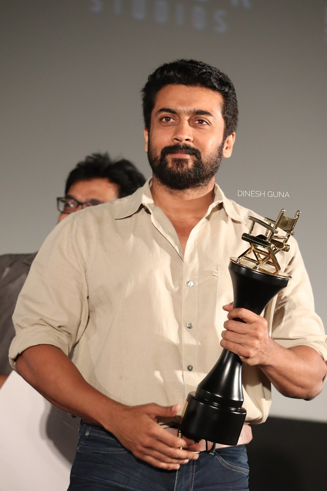

Saravanan Sivakumar (born 23 July 1975), known by his stage name Suriya, is an Indian actor and film producer. He primarily works in Tamil cinema where he is one of the highest paid actors.He has received numerous awards including two National Film Awards,six Filmfare Awards South, three Tamil Nadu State Film Awards and two South Indian International Movie Awards.Suriya has featured six times in the Celebrity 100 list of Forbes India, which takes into account the earnings of Indian celebrities.
After making his debut in Nerukku Ner (1997) at the age of 22, Suriya landed his breakthrough role in Nandha (2001) and then had his first major commercial success with the thriller Kaakha Kaakha (2003). Following award-winning performances of a conman in Pithamagan (2003) and a hunchback in Perazhagan (2004), he played a man suffering from anterograde amnesia in the 2005 blockbuster Ghajini. He rose to stardom with dual roles of a father and son in Gautham Vasudev Menon's semi-autobiographical Vaaranam Aayiram (2008). His status as an action star was established with roles of a smuggler in Ayan (2009), and an aggressive cop in the Singam trilogy. He also found success with the science fiction films 7aum Arivu (2011) and 24 (2016) and then went on to work in critically acclaimed films like Soorarai Pottru (2020) and Jai Bhim (2021), the former of which earned him the National Film Award for Best Actor.
Suriya is the eldest child of actor Sivakumar and his younger brother Karthi is also an actor. In 2006, he married actress Jyothika whom he co-starred with in 7 films. In 2008, he began Agaram Foundation, which funds various philanthropic activities. The year 2012 marked his debut as a television presenter with the Star Vijay game show Neengalum Vellalam Oru Kodi, the Tamil version of Who Wants to Be a Millionaire?. In 2013, Suriya founded the production house 2D Entertainment.
Early Life and Family
Suriya was born as Saravanan on 23 July 1975 in Madras (now Chennai), Tamil Nadu, to actor Sivakumar and his wife Lakshmi. He attended Padma Seshadri Bala Bhavan Schooland St. Bede's Anglo Indian Higher Secondary School in Chennai,and obtained his under graduate degree B.Com from Loyola College, Chennai.Suriya has two younger siblings, a brother Karthi and a sister Brindha. Suriya with his wife Jyothika at the launch of her film Kaatrin Mozhi Suriya is married to Jyothika. The couple, after dating for several years, got married on 11 September 2006.They have two children.
Humanitarian and Social Causes
In 2007, Suriya was the brand ambassador of Tanker Foundation and also acted in a short film on AIDS awareness.He has also lent his voice to other noble causes such as "Save The Tigers" campaign, which aids in the protection and preservation of Tigers in India, and "REACH", a non-profit that cures TB patients for free using supervised medication programs.In 2019, Suriya criticised the union government's Draft National Education Policy (NEP), claiming that several of its features would affect students from rural areas. He said the policy sought to impose entrance and qualifying examination on students and the three language formula in Tamil Nadu. His statements were criticized by BJP and AIADMK leaders.
Suriya issued a statement on National Eligibility cum Entrance Test (NEET) in September 2020 after three students committed suicide. He criticized the government for enacting laws that created inequalities and criticized the judiciary saying that "while the court is run through video conferencing, they have ordered students to take the exams in person during COVID-19". He referred to NEET as "manuneethi" and compared it to a tale in the Mahabharata in which Drona demanded Ekalavya's thumb as payment for training and said "the skills and abilities of our children should not be determined by one test".He asked people to raise their voice against the NEET which "prevents medical courses to students from normal families".Madras High court judge S.M. Balasubramaniam urged the chief justice to take contempt action against Suriya but this was opposed by six retired judges.Suriya's wife Jyothika had on a separate occasion requested to contribute to schools and hospitals the same as temples. The Bharatiya Janata Party (BJP) and other right-wing organisations condemned them while they garnered widespread support from people advocating equal access to healthcare and education.
Philanthropy
In 2006, Suriya began Agaram Foundation, working to help children who drop out of school early in Tamil Nadu. Suriya revealed that he was inspired to begin the movement as a result of his father's own organisation, Sivakumar Educational Trust, which had been operating similar benefits on a smaller scale since the 1980s.With the Ministry of Education in Tamil Nadu, the foundation created a short commercial video outlining child poverty, labour and lack of education.The film was written and produced by Sivakumar and also starred Vijay, Madhavan and Jyothika. Agaram sponsored 159 underprivileged students in 2010 for their higher education in various disciplines, and has continued to provide free seats and accommodation for pupils. With the firm belief that the educated mind can not only eliminate social evils but also aid in the socio-economic upbringing of society, Agaram Foundation works towards providing appropriate learning opportunities to the rural populace who do not otherwise have access to quality education. Through the foundation, he has also set up a platform for students to participate in workshops and improve communication skills, teamwork, goal setting and leadership.

Awards
Suriya is an Indian actor, producer as well as a television host. He made his film debut in Nerrukku Ner (1997), which won him the Cinema Express Award for Best New Face Actor and the Dinakaran Award for Best New Face Actor. He won Tamil Nadu State Film Award for Best Actor in 2002 for the film Nandha, which was the major break in his career. He won his first Filmfare Award, for Best Supporting Actor for the film Pithamagan (2003). Suriya was nominated seventeen times and won six Filmfare Awards South, including three for Best Actor. At Vijay Awards, he was nominated fourteen times and won five. In 2010, he was awarded as Best Welfare Provider by Vijay TV for his contribution through Agaram Foundation. He won his first National Film Award, for Best Actor, for Soorarai Pottru in 2022.
Other Work
In 2004, Suriya was Pepsi's brand ambassador in Tamil Nadu along with R. Madhavan. He was chosen to represent TVS Motors, Sunfeast Biscuits and Aircel in 2006. He had endorsed Saravana Stores,Bharathi Cements and Emami Navaratna products in 2010.In 2011, he had signed new deals with Nescafe, Close-Up and Zandu Balm, for the latter of which he appeared with actress Malaika Arora. In 2012, Suriya endorsed Malabar Gold and Diamonds. The commercials for Aircel and Nescafe featured Suriya and his wife Jyothika together.In 2013, he was honored at the Edison Awards as the Best Male Endorser in South India.In 2014, he promoted Complan energy drinks.In 2015, Suriya was named as the brand ambassador for Quikr and Intex Moblies.Based on the earnings of Indian celebrities, Suriya was included in the Forbes India Celebrity 100 list for 2012,2013,2015,2016,2017and 2018.His peak ranking on the list was #25 in the year 2017.